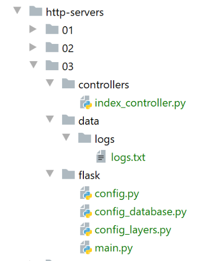

25. Ejercicio práctico: versión 8
25.1. Introducción
Vamos a escribir una nueva aplicación cliente/servidor. La novedad del servidor es que administrará una sesión. En lugar de colocar los datos de la administración tributaria en un objeto de ámbito [application], los colocaremos en un objeto de ámbito [session]. Al hacerlo, se reduce el rendimiento del código. Cuando un objeto puede ser compartido en modo de solo lectura por todos los usuarios, es preferible convertirlo en un objeto de ámbito [application] en lugar de uno de ámbito [session]. Se ahorra, como mínimo, ancho de banda, ya que así se reduce el tamaño de la cookie de sesión. Pero queremos mostrar una aplicación cliente/servidor en la que el cliente y el servidor intercambian una cookie de sesión.
La arquitectura de la aplicación no cambia:

25.2. El servidor web
La estructura de los scripts del servidor es la siguiente:

La carpeta [http-servers/03] se obtiene inicialmente al copiar la carpeta [http-servers/02]. Luego se realizan modificaciones.
25.2.1. La configuración
Es la misma que en la |versión anterior| con algunas modificaciones en el script [config]:
# dependencias absolutas
absolute_dependencies = [
# carpetas del proyecto
# BaseEntity, MyException
f"{root_dir}/classes/02/entities",
# InterfaceImpôtsDao, InterfaceImpôtsMétier, InterfaceImpôtsUi
f"{root_dir}/impots/v04/interfaces",
# AbstractImpôtsdao, ImpôtsConsole, ImpôtsMétier
f"{root_dir}/impots/v04/services",
# ImpotsDaoWithAdminDataInDatabase
f"{root_dir}/impots/v05/services",
# AdminData, ImpôtsError, TaxPayer
f"{root_dir}/impots/v04/entities",
# Constantes, Tramos
f"{root_dir}/impots/v05/entities",
# index_controller
f"{script_dir}/../controllers",
# scripts [config_database, config_layers]
script_dir,
# Logger, SendAdminMail
f"{root_dir}/impots/http-servers/02/utilities",
]
- línea 17: reescribiremos un controlador para la función [index] que procesa el URL / ;
- línea 21: utilizamos las utilidades de la |versión anterior|;
25.2.2. El script principal [main]
El nuevo script [main] introduce algunas modificaciones al script principal [main] de la versión anterior:
# la aplicación Flask puede iniciarse
app = Flask(__name__)
# clave secreta de la sesión
app.secret_key = os.urandom(12).hex()
- línea 4: se crea una clave secreta para la aplicación. Sabemos que esta es necesaria para administrar las sesiones;
Además, ya no se solicitan los datos fiscales en el código de [main]. Se eliminan las siguientes líneas:
# recuperación de datos de la administración tributaria
erreur = False
try:
# admindata será un dato de alcance de la aplicación de solo lectura
config["admindata"] = config["layers"]["dao"].get_admindata()
# registro de éxito
logger.write("[serveur] connexion à la base de données réussie\n")
except ImpôtsError as ex:
# se registra el error
erreur = True
# registro de error
log = f"L'erreur suivante s'est produite : {ex}"
# consola
print(log)
# archivo de registros
logger.write(f"{log}\n")
# correo al administrador
send_adminmail(config, log)
Además, el controlador [index_controller] admite un parámetro adicional, la sesión de Flask:
from flask import request, Flask, session
….
# se hace que un controlador ejecute la consulta
résultat, status_code = index_controller.execute(request, session, config)
25.2.3. El controlador [index_controller]
El controlador [index_controller] ahora gestiona una sesión:
# importación de dependencias
import os
import re
import threading
from flask_api import status
from werkzeug.local import LocalProxy
# URL configurada: /?casado=xx&hijos=yy&salario=zz
from AdminData import AdminData
from ImpôtsError import ImpôtsError
def execute(request: LocalProxy, session: LocalProxy, config: dict) -> tuple:
# dependencias
from TaxPayer import TaxPayer
# al principio no había errores
erreurs = []
…
# ¿Hay errores?
if erreurs:
# se devuelve un mensaje de error al cliente
return {"réponse": {"erreurs": erreurs}}, status.HTTP_400_BAD_REQUEST
# sin errores, se puede trabajar
# se recupera la configuración asociada al hilo
thread_name = threading.current_thread().name
logger = config[thread_name]["config"]["logger"]
# se ejecuta la consulta
réponse = None
try:
# el caso más sencillo: admindata ya está en sesión
if session.get('client_id') is not None:
# se recupera la información de la sesión
client_id = session.get('client_id')
admindata = AdminData().fromdict(session.get('admindata'))
# registro
logger.write(f"[index_controller] client [{client_id}], données fiscales prises en session\n")
else:
# recuperación de los datos de la administración tributaria
admindata = config["layers"]["dao"].get_admindata()
# Inicio de sesión de admindata
session['admindata'] = admindata.asdict()
# se le asigna un número al cliente y se registra ese número en la sesión
# esto nos permitirá rastrearlo en los registros del servidor
client_id = os.urandom(12).hex()
session['client_id'] = client_id
# registro
logger.write(f"[index_controller] client [{client_id}], données fiscales prises dans la couche dao\n")
# cálculo del impuesto
taxpayer = TaxPayer().fromdict({'marié': marié, 'enfants': enfants, 'salaire': salaire})
config["layers"]["métier"].calculate_tax(taxpayer, admindata)
# le enviamos la respuesta al cliente
return {"réponse": {"result": taxpayer.asdict()}}, status.HTTP_200_OK
except (BaseException, ImpôtsError) as erreur:
# se le entrega la respuesta al cliente
return {"réponse": {"erreurs": [f"{erreur}"]}}, status.HTTP_500_INTERNAL_SERVER_ERROR
- línea 14: el controlador recibe la sesión actual del cliente web;
- líneas 35-38: si el cliente tiene una sesión, esta contiene dos claves:
- [client_id]: un número de cliente (línea 37);
- [admindata]: los datos de la administración tributaria en forma de diccionario (línea 38);
- línea 35: se verifica si la sesión contiene alguna de las dos claves esperadas;
- líneas 42-51: caso en el que la sesión del cliente aún no se ha inicializado;
- línea 43: se recuperan los datos de la administración tributaria de la capa [dao];
- línea 45: estos datos se almacenan en la sesión en forma de diccionario;
- línea 48: se le asigna un número aleatorio al cliente. Este número será diferente para cada cliente;
- línea 49: este número se guarda en la sesión;
- línea 51: se registra que los datos de la administración tributaria se obtuvieron a través de la capa [dao]. Los accesos a la capa [dao] suelen ser costosos. Por eso es necesario limitarlos. La idea aquí es obtener los datos fiscales una sola vez de la capa [dao], guardarlos en la sesión y recuperarlos de ahí en las solicitudes posteriores del mismo cliente. Cabe recordar que esta no es la mejor solución. Dado que los datos fiscales de la administración son los mismos para todos los clientes, su lugar está en un objeto de alcance de aplicación;
- líneas 35-40: caso en el que la sesión del cliente se haya inicializado durante una solicitud anterior;
- línea 37: se recupera el número de cliente de la sesión;
- línea 38: se recuperan los datos fiscales de la administración de la sesión;
- línea 40: se registra que el cliente ha obtenido los datos fiscales de la administración en la sesión;
25.3. El cliente web

25.3.1. La capa [dao]
25.3.1.1. La clase [ImpôtsDaoWithHttpSession]
La capa [dao] está implementada por la siguiente clase [ImpôtsDaoWithHttpSession]:
# importaciones
import requests
from flask_api import status
from myutils import decode_flask_session
from AbstractImpôtsDao import AbstractImpôtsDao
from AdminData import AdminData
from ImpôtsError import ImpôtsError
from InterfaceImpôtsMétier import InterfaceImpôtsMétier
from TaxPayer import TaxPayer
class ImpôtsDaoWithHttpSession(AbstractImpôtsDao, InterfaceImpôtsMétier):
# constructor
def __init__(self, config: dict):
# inicialización del elemento principal
AbstractImpôtsDao.__init__(self, config)
# almacenamiento de los elementos de configuración
# configuración general
self.__config = config
# servidor
self.__config_server = config["server"]
# modo de depuración
self.__debug = config["debug"]
# registrador
self.__logger = None
# cookies
self.__cookies = None
# método no utilizado
def get_admindata(self) -> AdminData:
pass
# cálculo del impuesto
def calculate_tax(self, taxpayer: TaxPayer, admindata: AdminData = None):
# se permite que las excepciones se propaguen
# parámetros de la llamada GET
params = {"marié": taxpayer.marié, "enfants": taxpayer.enfants, "salaire": taxpayer.salaire}
# ¿Conexión con autenticación Auth Basic?
if self.__config_server['authBasic']:
response = requests.get(
# URL del servidor consultado
self.__config_server['urlServer'],
# parámetros del URL
params=params,
# autenticación Basic
auth=(
self.__config_server["user"]["login"],
self.__config_server["user"]["password"]),
cookies=self.__cookies)
else:
# conexión sin autenticación Basic
response = requests.get(self.__config_server['urlServer'], params=params, cookies=self.__cookies)
# se recuperan las cookies de la respuesta, si las hay
if response.cookies:
self.__cookies = response.cookies
# se recupera la cookie de sesión
session_cookie = response.cookies.get('session')
# se decodifica para iniciar sesión
if session_cookie:
# programa de inicio de sesión
if not self.__logger:
self.__logger = self.__config['logger']
# se registra
self.__logger.write(f"cookie de session={decode_flask_session(session_cookie)}\n")
# ¿modo de depuración?
if self.__debug:
# registrador
if not self.__logger:
self.__logger = self.__config['logger']
# se registra
self.__logger.write(f"{response.text}\n")
# código de estado de la respuesta HTTP
status_code = response.status_code
# se guarda la respuesta jSON en un diccionario
résultat = response.json()
# error si el código de estado es distinto de 200 OK
if status_code != status.HTTP_200_OK:
# se sabe que los errores se han asociado a la clave [erreurs] de la respuesta
raise ImpôtsError(87, résultat['réponse']['erreurs'])
# se sabe que el resultado se ha asociado a la clave [result] de la respuesta
# se modifica el parámetro de entrada con este resultado
taxpayer.fromdict(résultat["réponse"]["result"])
- línea 30: la capa [dao] administrará un diccionario de cookies;
- línea 58: la propiedad [response.cookies] es un diccionario que reúne las cookies enviadas por el servidor en los encabezados HTTP y [Set-Cookie];
- línea 59: estas cookies se almacenan en la capa [dao]. Se reenviarán al servidor en las solicitudes posteriores del mismo cliente;
- líneas 60-68: aunque no es imprescindible, se recupera la cookie de sesión. En el diccionario de cookies enviadas por el servidor, la cookie de sesión está asociada a la clave [session];
- líneas 62-68: se decodifica la cookie de sesión para iniciar sesión;
- línea 68: más adelante volveremos a la función [decode_flask_session], que decodifica la cookie de sesión;
- líneas 52 y 57: con cada solicitud del mismo cliente, se le devuelven las cookies enviadas por el servidor. De esta manera se mantiene la sesión de Flask entre el cliente y el servidor;
Ahora hay que recordar que la capa [dao] se ejecutará simultáneamente en varios hilos. Por lo tanto, hay que revisar todas las propiedades de la instancia de clase y verificar si el acceso simultáneo a estas propiedades plantea algún problema. Aquí hemos agregado la propiedad [self.__cookies], en la línea 30. Esta propiedad se modifica en la línea 59. Por lo tanto, tenemos un acceso de escritura a un dato compartido por todos los hilos. Sin embargo, este acceso plantea un problema: cada hilo que representa a un cliente específico tiene su propia cookie de sesión. De hecho, en su interior hay un número de cliente (=hilo) único para cada cliente. Si no se hace nada, el hilo T2 puede sobrescribir las cookies del hilo T1.
Ya hemos visto un método para manejar este problema: se pueden crear, en el archivo [config] pasado como parámetro al constructor (línea 17), claves diferentes para cada hilo. Por ejemplo, se puede utilizar como clave el nombre del hilo:
- en la línea 59, se podría escribir:
config[thread_name][‘cookies’]=cookies
- en la línea 52, se podría escribir entonces:
cookies=config[thread_name][‘cookies’]
Aquí vamos a utilizar una técnica diferente: cada hilo (=cliente) tendrá su propia capa [dao]. De esta manera, la línea 59 ya no presenta ningún problema, ya que las cookies utilizadas son las de un único cliente.
Para ello, crearemos una nueva clase [ImpôtsDaoWithHttpSessionFactory].
25.3.1.2. La función de decodificación de la sesión de Flask
La función [decode_flask_session] se define en el script [myutils]:

Ya hemos estudiado el script |myutils|. Este script es un módulo de alcance de máquina que los distintos scripts de este curso pueden importar con la instrucción:
En él se define la función [decode_flask_session] de la siguiente manera:
def decode_flask_session(cookie: str) -> str:
# fuente: https://www.kirsle.net/wizards/flask-session.cgi
compressed = False
payload = cookie
if payload.startswith('.'):
compressed = True
payload = payload[1:]
data = payload.split(".")[0]
data = base64_decode(data)
if compressed:
data = zlib.decompress(data)
return data.decode("utf-8")
- línea 2: el URL donde encontré esta función;
- línea 1: el parámetro [cookie] es la cadena de caracteres asociada a la clave [session] en el diccionario de cookies recibidas por un cliente web;
- líneas 3-16: no voy a comentar este código, ya que no lo domino;
Se agrega una nueva importación al archivo [__init__.py]:
from .myutils import set_syspath, json_response, decode_flask_session
La nueva versión de [myutils] se instala entre los módulos de ámbito de máquina con el comando [pip install .] en un terminal de PyCharm:
(venv) C:\Data\st-2020\dev\python\cours-2020\python3-flask-2020\packages>pip install .
Processing c:\data\st-2020\dev\python\cours-2020\python3-flask-2020\packages
Using legacy setup.py install for myutils, since package 'wheel' is not installed.
Installing collected packages: myutils
Attempting uninstall: myutils
Found existing installation: myutils 0.1
Uninstalling myutils-0.1:
Successfully uninstalled myutils-0.1
Running setup.py install for myutils ... done
Successfully installed myutils-0.1
- línea 1: hay que estar en la carpeta [packages] para escribir esta instrucción;
25.3.1.3. La clase [ImpôtsDaoWithHttpSessionFactory]
La clase [ImpôtsDaoWithHttpSessionFactory] es la siguiente:
from ImpôtsDaoWithHttpSession import ImpôtsDaoWithHttpSession
class ImpôtsDaoWithHttpSessionFactory:
def __init__(self, config: dict):
# se almacena el parámetro
self.__config = config
def new_instance(self):
# se devuelve una instancia de la capa [dao]
return ImpôtsDaoWithHttpSession(self.__config)
- La clase [ImpôtsDaoWithHttpSessionFactory] permite crear una nueva implementación de la capa [dao] con el método [new_instance] de las líneas 10 a 12;
25.3.2. La configuración
El script [config_layers], que configura las capas del cliente web, se modifica de la siguiente manera:
def configure(config: dict) -> dict:
# instanciación de las capas de la aplicación
# capa DAO
from ImpôtsDaoWithHttpSessionFactory import ImpôtsDaoWithHttpSessionFactory
dao_factory = ImpôtsDaoWithHttpSessionFactory(config)
# se realiza la configuración de las capas
return {
"dao_factory": dao_factory
}
- líneas 5-6: en lugar de instanciar una sola capa [dao] como se hacía anteriormente, se instancia una «fábrica» de esta capa (fábrica = fábrica de producción de objetos, en este caso la capa [dao]);
- líneas 9-11: se devuelve la configuración de las capas;
25.3.3. El script principal del cliente
El script [main] presenta los siguientes cambios con respecto al de la versión anterior:
# se configura la aplicación
import config
config = config.configure({})
# dependencias
from ImpôtsError import ImpôtsError
import random
import sys
import threading
from Logger import Logger
# ejecución de la capa [dao] en un hilo
# «taxpayers» es una lista de contribuyentes
def thread_function(thread_dao, logger, taxpayers: list):
…
# lista de subprocesos del cliente
threads = []
logger = None
# código
try:
…
l_taxpayers = len(taxpayers)
while i < len(taxpayers):
…
# cada hilo debe tener su propia capa [dao] para gestionar correctamente su cookie de sesión
thread_dao = dao_factory.new_instance()
# se crea el hilo
thread = threading.Thread(target=thread_function, args=(thread_dao, logger, thread_taxpayers))
# se agrega a la lista de subprocesos del script principal
threads.append(thread)
# se inicia el hilo —esta operación es asíncrona—; no se espera el resultado del hilo
thread.start()
# el hilo principal espera a que finalicen todos los hilos que ha iniciado
…
except BaseException as erreur:
# se muestra el error
print(f"L'erreur suivante s'est produite : {erreur}")
finally:
# se cierra el registrador
if logger:
logger.close()
# se ha terminado
print("Travail terminé...")
# fin de los subprocesos que aún podrían existir si se detuvo por un error
sys.exit()
- líneas 29-30: cada hilo tiene su propia capa [dao];
25.3.4. Ejecución del cliente
Se inicia el servidor web, se inicia el SGBD y se inicia el servidor de correo [hMailServer]. Luego se inicia el script [main] del cliente web. Los registros de ejecución en [data/logs/logs.txt] son los siguientes:
2020-07-25 10:21:46.478511, Thread-1 : début du thread [Thread-1] avec 1 contribuable(s)
2020-07-25 10:21:46.479111, Thread-1 : début du calcul de l'impôt de {"id": 1, "marié": "oui", "enfants": 2, "salaire": 55555}
2020-07-25 10:21:46.479111, Thread-2 : début du thread [Thread-2] avec 1 contribuable(s)
2020-07-25 10:21:46.480195, Thread-3 : début du thread [Thread-3] avec 2 contribuable(s)
2020-07-25 10:21:46.480195, Thread-2 : début du calcul de l'impôt de {"id": 2, "marié": "oui", "enfants": 2, "salaire": 50000}
2020-07-25 10:21:46.481137, Thread-4 : début du thread [Thread-4] avec 3 contribuable(s)
2020-07-25 10:21:46.481137, Thread-3 : début du calcul de l'impôt de {"id": 3, "marié": "oui", "enfants": 3, "salaire": 50000}
2020-07-25 10:21:46.482279, Thread-5 : début du thread [Thread-5] avec 3 contribuable(s)
2020-07-25 10:21:46.482622, Thread-6 : début du thread [Thread-6] avec 1 contribuable(s)
2020-07-25 10:21:46.482622, Thread-4 : début du calcul de l'impôt de {"id": 5, "marié": "non", "enfants": 3, "salaire": 100000}
2020-07-25 10:21:46.485923, Thread-5 : début du calcul de l'impôt de {"id": 8, "marié": "non", "enfants": 0, "salaire": 100000}
2020-07-25 10:21:46.485923, Thread-6 : début du calcul de l'impôt de {"id": 11, "marié": "oui", "enfants": 3, "salaire": 200000}
2020-07-25 10:21:46.725910, Thread-4 : cookie de session={"admindata":{"abattement_dixpourcent_max":12502.0,"abattement_dixpourcent_min":437.0,"coeffn":[0.0,1394.96,5798.0,13913.7,20163.4],"coeffr":[0.0,0.14,0.3,0.41,0.45],"id":1,"limites":[9964.0,27519.0,73779.0,156244.0,90000.0],"plafond_decote_celibataire":1196.0,"plafond_decote_couple":1970.0,"plafond_impot_celibataire_pour_decote":1595.0,"plafond_impot_couple_pour_decote":2627.0,"plafond_qf_demi_part":1551.0,"plafond_revenus_celibataire_pour_reduction":21037.0,"plafond_revenus_couple_pour_reduction":42074.0,"valeur_reduc_demi_part":3797.0},"client_id":"fa3c83b82761c83e13217967"}
2020-07-25 10:21:46.725910, Thread-4 : {"réponse": {"result": {"marié": "non", "enfants": 3, "salaire": 100000, "impôt": 16782, "surcôte": 7176, "taux": 0.41, "décôte": 0, "réduction": 0}}}
2020-07-25 10:21:46.725910, Thread-4 : fin du calcul de l'impôt de {"id": 5, "marié": "non", "enfants": 3, "salaire": 100000, "impôt": 16782, "surcôte": 7176, "taux": 0.41, "décôte": 0, "réduction": 0}
2020-07-25 10:21:46.726960, Thread-4 : début du calcul de l'impôt de {"id": 6, "marié": "oui", "enfants": 3, "salaire": 100000}
2020-07-25 10:21:47.514108, Thread-3 : cookie de session={"admindata":{"abattement_dixpourcent_max":12502.0,"abattement_dixpourcent_min":437.0,"coeffn":[0.0,1394.96,5798.0,13913.7,20163.4],"coeffr":[0.0,0.14,0.3,0.41,0.45],"id":1,"limites":[9964.0,27519.0,73779.0,156244.0,24999.5],"plafond_decote_celibataire":1196.0,"plafond_decote_couple":1970.0,"plafond_impot_celibataire_pour_decote":1595.0,"plafond_impot_couple_pour_decote":2627.0,"plafond_qf_demi_part":1551.0,"plafond_revenus_celibataire_pour_reduction":21037.0,"plafond_revenus_couple_pour_reduction":42074.0,"valeur_reduc_demi_part":3797.0},"client_id":"700e3f5dc808c7c48f0c9007"}
2020-07-25 10:21:47.514610, Thread-3 : {"réponse": {"result": {"marié": "oui", "enfants": 3, "salaire": 50000, "impôt": 0, "surcôte": 0, "taux": 0.14, "décôte": 720, "réduction": 0}}}
2020-07-25 10:21:47.514939, Thread-3 : fin du calcul de l'impôt de {"id": 3, "marié": "oui", "enfants": 3, "salaire": 50000, "impôt": 0, "surcôte": 0, "taux": 0.14, "décôte": 720, "réduction": 0}
2020-07-25 10:21:47.514939, Thread-3 : début du calcul de l'impôt de {"id": 4, "marié": "non", "enfants": 2, "salaire": 100000}
2020-07-25 10:21:47.527211, Thread-5 : cookie de session={"admindata":{"abattement_dixpourcent_max":12502.0,"abattement_dixpourcent_min":437.0,"coeffn":[0.0,1394.96,5798.0,13913.7,20163.4],"coeffr":[0.0,0.14,0.3,0.41,0.45],"id":1,"limites":[9964.0,27519.0,73779.0,156244.0,90000.0],"plafond_decote_celibataire":1196.0,"plafond_decote_couple":1970.0,"plafond_impot_celibataire_pour_decote":1595.0,"plafond_impot_couple_pour_decote":2627.0,"plafond_qf_demi_part":1551.0,"plafond_revenus_celibataire_pour_reduction":21037.0,"plafond_revenus_couple_pour_reduction":42074.0,"valeur_reduc_demi_part":3797.0},"client_id":"9e14a5d4a3057f69ab95ab2d"}
2020-07-25 10:21:47.527211, Thread-2 : cookie de session={"admindata":{"abattement_dixpourcent_max":12502.0,"abattement_dixpourcent_min":437.0,"coeffn":[0.0,1394.96,5798.0,13913.7,20163.4],"coeffr":[0.0,0.14,0.3,0.41,0.45],"id":1,"limites":[9964.0,27519.0,73779.0,156244.0,22500.0],"plafond_decote_celibataire":1196.0,"plafond_decote_couple":1970.0,"plafond_impot_celibataire_pour_decote":1595.0,"plafond_impot_couple_pour_decote":2627.0,"plafond_qf_demi_part":1551.0,"plafond_revenus_celibataire_pour_reduction":21037.0,"plafond_revenus_couple_pour_reduction":42074.0,"valeur_reduc_demi_part":3797.0},"client_id":"a06e8fd70a44c9e311f4dce0"}
2020-07-25 10:21:47.527211, Thread-5 : {"réponse": {"result": {"marié": "non", "enfants": 0, "salaire": 100000, "impôt": 22986, "surcôte": 0, "taux": 0.41, "décôte": 0, "réduction": 0}}}
2020-07-25 10:21:47.527211, Thread-1 : cookie de session={"admindata":{"abattement_dixpourcent_max":12502.0,"abattement_dixpourcent_min":437.0,"coeffn":[0.0,1394.96,5798.0,13913.7,20163.4],"coeffr":[0.0,0.14,0.3,0.41,0.45],"id":1,"limites":[9964.0,27519.0,73779.0,156244.0,90000.0],"plafond_decote_celibataire":1196.0,"plafond_decote_couple":1970.0,"plafond_impot_celibataire_pour_decote":1595.0,"plafond_impot_couple_pour_decote":2627.0,"plafond_qf_demi_part":1551.0,"plafond_revenus_celibataire_pour_reduction":21037.0,"plafond_revenus_couple_pour_reduction":42074.0,"valeur_reduc_demi_part":3797.0},"client_id":"28c38df998f67685b3a482b8"}
2020-07-25 10:21:47.527211, Thread-2 : {"réponse": {"result": {"marié": "oui", "enfants": 2, "salaire": 50000, "impôt": 1384, "surcôte": 0, "taux": 0.14, "décôte": 384, "réduction": 347}}}
2020-07-25 10:21:47.528341, Thread-5 : fin du calcul de l'impôt de {"id": 8, "marié": "non", "enfants": 0, "salaire": 100000, "impôt": 22986, "surcôte": 0, "taux": 0.41, "décôte": 0, "réduction": 0}
2020-07-25 10:21:47.528341, Thread-1 : {"réponse": {"result": {"marié": "oui", "enfants": 2, "salaire": 55555, "impôt": 2814, "surcôte": 0, "taux": 0.14, "décôte": 0, "réduction": 0}}}
2020-07-25 10:21:47.528842, Thread-2 : fin du calcul de l'impôt de {"id": 2, "marié": "oui", "enfants": 2, "salaire": 50000, "impôt": 1384, "surcôte": 0, "taux": 0.14, "décôte": 384, "réduction": 347}
2020-07-25 10:21:47.529349, Thread-5 : début du calcul de l'impôt de {"id": 9, "marié": "oui", "enfants": 2, "salaire": 30000}
2020-07-25 10:21:47.529699, Thread-1 : fin du calcul de l'impôt de {"id": 1, "marié": "oui", "enfants": 2, "salaire": 55555, "impôt": 2814, "surcôte": 0, "taux": 0.14, "décôte": 0, "réduction": 0}
2020-07-25 10:21:47.529699, Thread-2 : fin du thread [Thread-2]
2020-07-25 10:21:47.531905, Thread-1 : fin du thread [Thread-1]
2020-07-25 10:21:47.536121, Thread-6 : cookie de session={"admindata":{"abattement_dixpourcent_max":12502.0,"abattement_dixpourcent_min":437.0,"coeffn":[0.0,1394.96,5798.0,13913.7,20163.4],"coeffr":[0.0,0.14,0.3,0.41,0.45],"id":1,"limites":[9964.0,27519.0,73779.0,156244.0,93749.0],"plafond_decote_celibataire":1196.0,"plafond_decote_couple":1970.0,"plafond_impot_celibataire_pour_decote":1595.0,"plafond_impot_couple_pour_decote":2627.0,"plafond_qf_demi_part":1551.0,"plafond_revenus_celibataire_pour_reduction":21037.0,"plafond_revenus_couple_pour_reduction":42074.0,"valeur_reduc_demi_part":3797.0},"client_id":"38499b63076516c02f2770ec"}
2020-07-25 10:21:47.537161, Thread-3 : {"réponse": {"result": {"marié": "non", "enfants": 2, "salaire": 100000, "impôt": 19884, "surcôte": 4480, "taux": 0.41, "décôte": 0, "réduction": 0}}}
2020-07-25 10:21:47.537161, Thread-6 : {"réponse": {"result": {"marié": "oui", "enfants": 3, "salaire": 200000, "impôt": 42842, "surcôte": 17283, "taux": 0.41, "décôte": 0, "réduction": 0}}}
2020-07-25 10:21:47.538156, Thread-3 : fin du calcul de l'impôt de {"id": 4, "marié": "non", "enfants": 2, "salaire": 100000, "impôt": 19884, "surcôte": 4480, "taux": 0.41, "décôte": 0, "réduction": 0}
2020-07-25 10:21:47.538557, Thread-6 : fin du calcul de l'impôt de {"id": 11, "marié": "oui", "enfants": 3, "salaire": 200000, "impôt": 42842, "surcôte": 17283, "taux": 0.41, "décôte": 0, "réduction": 0}
2020-07-25 10:21:47.538828, Thread-3 : fin du thread [Thread-3]
2020-07-25 10:21:47.538828, Thread-6 : fin du thread [Thread-6]
2020-07-25 10:21:47.546198, Thread-5 : {"réponse": {"result": {"marié": "oui", "enfants": 2, "salaire": 30000, "impôt": 0, "surcôte": 0, "taux": 0.0, "décôte": 0, "réduction": 0}}}
2020-07-25 10:21:47.546198, Thread-5 : fin du calcul de l'impôt de {"id": 9, "marié": "oui", "enfants": 2, "salaire": 30000, "impôt": 0, "surcôte": 0, "taux": 0.0, "décôte": 0, "réduction": 0}
2020-07-25 10:21:47.546198, Thread-5 : début du calcul de l'impôt de {"id": 10, "marié": "non", "enfants": 0, "salaire": 200000}
2020-07-25 10:21:47.739643, Thread-4 : {"réponse": {"result": {"marié": "oui", "enfants": 3, "salaire": 100000, "impôt": 9200, "surcôte": 2180, "taux": 0.3, "décôte": 0, "réduction": 0}}}
2020-07-25 10:21:47.739643, Thread-4 : fin du calcul de l'impôt de {"id": 6, "marié": "oui", "enfants": 3, "salaire": 100000, "impôt": 9200, "surcôte": 2180, "taux": 0.3, "décôte": 0, "réduction": 0}
2020-07-25 10:21:47.740668, Thread-4 : début du calcul de l'impôt de {"id": 7, "marié": "oui", "enfants": 5, "salaire": 100000}
2020-07-25 10:21:48.557469, Thread-5 : {"réponse": {"result": {"marié": "non", "enfants": 0, "salaire": 200000, "impôt": 64210, "surcôte": 7498, "taux": 0.45, "décôte": 0, "réduction": 0}}}
2020-07-25 10:21:48.558715, Thread-5 : fin du calcul de l'impôt de {"id": 10, "marié": "non", "enfants": 0, "salaire": 200000, "impôt": 64210, "surcôte": 7498, "taux": 0.45, "décôte": 0, "réduction": 0}
2020-07-25 10:21:48.558715, Thread-5 : fin du thread [Thread-5]
2020-07-25 10:21:48.753025, Thread-4 : {"réponse": {"result": {"marié": "oui", "enfants": 5, "salaire": 100000, "impôt": 4230, "surcôte": 0, "taux": 0.14, "décôte": 0, "réduction": 0}}}
2020-07-25 10:21:48.753318, Thread-4 : fin du calcul de l'impôt de {"id": 7, "marié": "oui", "enfants": 5, "salaire": 100000, "impôt": 4230, "surcôte": 0, "taux": 0.14, "décôte": 0, "réduction": 0}
2020-07-25 10:21:48.753540, Thread-4 : fin du thread [Thread-4]
- Hay un total de 6 subprocesos, es decir, 6 clientes (líneas 1, 3, 4, 6, 8, 9) que consultan simultáneamente al servidor de cálculo de impuestos;
- vamos a seguir el hilo [Thread-4], que gestiona a 3 contribuyentes (línea 6). Este hilo realizará secuencialmente tres solicitudes al servidor de cálculo de impuestos;
- línea 10: la primera solicitud de [Thread-4];
- línea 13: [Thread-4] recibió la respuesta a su primera solicitud. En ella encuentra una cookie de sesión que contiene el número [fa3c83b82761c83e13217967] que le asignó el servidor;
- línea 14: el impuesto del primer contribuyente;
- línea 16: [Thread-4] realiza una solicitud para el segundo contribuyente;
- línea 43: [Thread-4] recibe el impuesto del segundo contribuyente;
- línea 45: [Thread-4] realiza una consulta para el tercer contribuyente;
- línea 49: [Thread-4] recibe el impuesto del tercer contribuyente;
- línea 51: [Thread-4] ha terminado su trabajo;
Ahora veamos cómo se procesaron las tres solicitudes de [Thread-4] en el servidor. Podremos seguirlo en los registros del servidor gracias a su número de cliente [fa3c83b82761c83e13217967].
Los registros de [data/logs/logs.txt] en el servidor son los siguientes:
2020-07-25 10:21:39.187366, MainThread : [serveur] démarrage du serveur
2020-07-25 10:21:40.439093, MainThread : [serveur] démarrage du serveur
2020-07-25 10:21:46.502011, Thread-2 : [index] requête : <Request 'http://127.0.0.1:5000/?casado=sí&hijos=3&salario=50000' [GET]>
2020-07-25 10:21:46.504049, Thread-2 : [index] mis en pause du thread pendant 1 seconde(s)
2020-07-25 10:21:46.505452, Thread-3 : [index] requête : <Request 'http://127.0.0.1:5000/?casado=sí&hijos=2&salario=55555' [GET]>
2020-07-25 10:21:46.506257, Thread-3 : [index] mis en pause du thread pendant 1 seconde(s)
2020-07-25 10:21:46.507292, Thread-4 : [index] requête : <Request 'http://127.0.0.1:5000/?casado=no&hijos=0&salario=100000' [GET]>
2020-07-25 10:21:46.507292, Thread-4 : [index] mis en pause du thread pendant 1 seconde(s)
2020-07-25 10:21:46.508301, Thread-5 : [index] requête : <Request 'http://127.0.0.1:5000/?casado=sí&hijos=2&salario=50000' [GET]>
2020-07-25 10:21:46.509293, Thread-5 : [index] mis en pause du thread pendant 1 seconde(s)
2020-07-25 10:21:46.511808, Thread-6 : [index] requête : <Request 'http://127.0.0.1:5000/?casado=no&hijos=3&salario=100000' [GET]>
2020-07-25 10:21:46.517604, Thread-7 : [index] requête : <Request 'http://127.0.0.1:5000/?casado=sí&hijos=3&salario=200000' [GET]>
2020-07-25 10:21:46.517604, Thread-7 : [index] mis en pause du thread pendant 1 seconde(s)
2020-07-25 10:21:46.719504, Thread-6 : [index_controller] client [fa3c83b82761c83e13217967], données fiscales prises dans la couche dao
2020-07-25 10:21:46.720003, Thread-6 : [index] {'réponse': {'result': {'marié': 'non', 'enfants': 3, 'salaire': 100000, 'impôt': 16782, 'surcôte': 7176, 'taux': 0.41, 'décôte': 0, 'réduction': 0}}}
2020-07-25 10:21:46.736108, Thread-8 : [index] requête : <Request 'http://127.0.0.1:5000/?casado=sí&hijos=3&salario=100000' [GET]>
2020-07-25 10:21:46.736108, Thread-8 : [index] mis en pause du thread pendant 1 seconde(s)
2020-07-25 10:21:47.506709, Thread-2 : [index_controller] client [700e3f5dc808c7c48f0c9007], données fiscales prises dans la couche dao
2020-07-25 10:21:47.507216, Thread-2 : [index] {'réponse': {'result': {'marié': 'oui', 'enfants': 3, 'salaire': 50000, 'impôt': 0, 'surcôte': 0, 'taux': 0.14, 'décôte': 720, 'réduction': 0}}}
2020-07-25 10:21:47.507216, Thread-3 : [index_controller] client [28c38df998f67685b3a482b8], données fiscales prises dans la couche dao
2020-07-25 10:21:47.508442, Thread-4 : [index_controller] client [9e14a5d4a3057f69ab95ab2d], données fiscales prises dans la couche dao
2020-07-25 10:21:47.508940, Thread-3 : [index] {'réponse': {'result': {'marié': 'oui', 'enfants': 2, 'salaire': 55555, 'impôt': 2814, 'surcôte': 0, 'taux': 0.14, 'décôte': 0, 'réduction': 0}}}
2020-07-25 10:21:47.510506, Thread-4 : [index] {'réponse': {'result': {'marié': 'non', 'enfants': 0, 'salaire': 100000, 'impôt': 22986, 'surcôte': 0, 'taux': 0.41, 'décôte': 0, 'réduction': 0}}}
2020-07-25 10:21:47.511513, Thread-5 : [index_controller] client [a06e8fd70a44c9e311f4dce0], données fiscales prises dans la couche dao
2020-07-25 10:21:47.514939, Thread-5 : [index] {'réponse': {'result': {'marié': 'oui', 'enfants': 2, 'salaire': 50000, 'impôt': 1384, 'surcôte': 0, 'taux': 0.14, 'décôte': 384, 'réduction': 347}}}
2020-07-25 10:21:47.520727, Thread-7 : [index_controller] client [38499b63076516c02f2770ec], données fiscales prises dans la couche dao
2020-07-25 10:21:47.523162, Thread-7 : [index] {'réponse': {'result': {'marié': 'oui', 'enfants': 3, 'salaire': 200000, 'impôt': 42842, 'surcôte': 17283, 'taux': 0.41, 'décôte': 0, 'réduction': 0}}}
2020-07-25 10:21:47.530835, Thread-9 : [index] requête : <Request 'http://127.0.0.1:5000/?casado=no&hijos=2&salario=100000' [GET]>
2020-07-25 10:21:47.531736, Thread-9 : [index_controller] client [700e3f5dc808c7c48f0c9007], données fiscales prises en session
2020-07-25 10:21:47.531905, Thread-9 : [index] {'réponse': {'result': {'marié': 'non', 'enfants': 2, 'salaire': 100000, 'impôt': 19884, 'surcôte': 4480, 'taux': 0.41, 'décôte': 0, 'réduction': 0}}}
2020-07-25 10:21:47.541899, Thread-10 : [index] requête : <Request 'http://127.0.0.1:5000/?casado=sí&hijos=2&salario=30000' [GET]>
2020-07-25 10:21:47.542488, Thread-10 : [index_controller] client [9e14a5d4a3057f69ab95ab2d], données fiscales prises en session
2020-07-25 10:21:47.542488, Thread-10 : [index] {'réponse': {'result': {'marié': 'oui', 'enfants': 2, 'salaire': 30000, 'impôt': 0, 'surcôte': 0, 'taux': 0.0, 'décôte': 0, 'réduction': 0}}}
2020-07-25 10:21:47.553628, Thread-11 : [index] requête : <Request 'http://127.0.0.1:5000/?casado=no&hijos=0&salario=200000' [GET]>
2020-07-25 10:21:47.553628, Thread-11 : [index] mis en pause du thread pendant 1 seconde(s)
2020-07-25 10:21:47.736910, Thread-8 : [index_controller] client [fa3c83b82761c83e13217967], données fiscales prises en session
2020-07-25 10:21:47.737191, Thread-8 : [index] {'réponse': {'result': {'marié': 'oui', 'enfants': 3, 'salaire': 100000, 'impôt': 9200, 'surcôte': 2180, 'taux': 0.3, 'décôte': 0, 'réduction': 0}}}
2020-07-25 10:21:47.748226, Thread-12 : [index] requête : <Request 'http://127.0.0.1:5000/?casado=sí&hijos=5&salario=100000' [GET]>
2020-07-25 10:21:47.748226, Thread-12 : [index] mis en pause du thread pendant 1 seconde(s)
2020-07-25 10:21:48.554695, Thread-11 : [index_controller] client [9e14a5d4a3057f69ab95ab2d], données fiscales prises en session
2020-07-25 10:21:48.555070, Thread-11 : [index] {'réponse': {'result': {'marié': 'non', 'enfants': 0, 'salaire': 200000, 'impôt': 64210, 'surcôte': 7498, 'taux': 0.45, 'décôte': 0, 'réduction': 0}}}
2020-07-25 10:21:48.748753, Thread-12 : [index_controller] client [fa3c83b82761c83e13217967], données fiscales prises en session
2020-07-25 10:21:48.748753, Thread-12 : [index] {'réponse': {'result': {'marié': 'oui', 'enfants': 5, 'salaire': 100000, 'impôt': 4230, 'surcôte': 0, 'taux': 0.14, 'décôte': 0, 'réduction': 0}}}
- El cliente [fa3c83b82761c83e13217967] aparece por primera vez en la línea 14: para calcular el impuesto, el servidor tuvo que buscar en la base de datos los datos de la administración tributaria;
- Luego, volvemos a encontrar al cliente [fa3c83b82761c83e13217967] en la línea 36. En esta ocasión, el servidor encuentra los datos de la administración tributaria en la sesión, lo que le evita un acceso, posiblemente costoso, a la capa [dao];
- encontramos al cliente [fa3c83b82761c83e13217967] por tercera vez en la línea 42, donde, una vez más, el servidor utiliza la sesión del cliente;
Este ejemplo ilustra claramente la utilidad de la sesión para un cliente: en ella se almacenan datos compartidos por todas las solicitudes de ese cliente y cuya obtención resulta costosa.
Del lado del cliente, los resultados en el archivo [data/output/résultats.json] son los mismos que en las versiones anteriores.
25.4. Pruebas de la capa [dao]
Al igual que en las |versiones anteriores|, probamos la capa [dao] del cliente:

La clase de prueba se ejecutará en el siguiente entorno:

- la configuración [2] es idéntica a la configuración [1] que acabamos de analizar;
La clase de prueba [TestHttpClientDao] es la siguiente:
import unittest
from Logger import Logger
class TestHttpClientDao(unittest.TestCase):
def test_1(self) -> None:
from TaxPayer import TaxPayer
# {'casado': 'sí', 'hijos': 2, 'salario': 55555,
# 'impuesto': 2814, 'recargo': 0, 'descuento': 0, 'reducción': 0, 'tasa': 0.14}
taxpayer = TaxPayer().fromdict({"marié": "oui", "enfants": 2, "salaire": 55555})
dao.calculate_tax(taxpayer)
# verificación
self.assertAlmostEqual(taxpayer.impôt, 2815, delta=1)
self.assertEqual(taxpayer.décôte, 0)
self.assertEqual(taxpayer.réduction, 0)
self.assertAlmostEqual(taxpayer.taux, 0.14, delta=0.01)
self.assertEqual(taxpayer.surcôte, 0)
…
if __name__ == '__main__':
# se configura la aplicación
import config
config = config.configure({})
# registrador
logger = Logger(config["logsFilename"])
# se guarda en la configuración
config["logger"] = logger
# se recupera la fábrica de la capa [dao]
dao_factory = config["layers"]["dao_factory"]
# se crea una instancia de la capa [dao]
dao = dao_factory.new_instance()
# ejecutamos los métodos de prueba
print("tests en cours...")
unittest.main()
- Se crea una |configuración de ejecución| para esta prueba;
- iniciamos el servidor web con todo su entorno;
- ejecutamos la prueba;
Los resultados son los siguientes:
C:\Data\st-2020\dev\python\cours-2020\python3-flask-2020\venv\Scripts\python.exe C:/Data/st-2020/dev/python/cours-2020/python3-flask-2020/impots/http-clients/03/tests/TestHttpClientDao.py
tests en cours...
...........
----------------------------------------------------------------------
Ran 11 tests in 3.392s
OK
Process finished with exit code 0